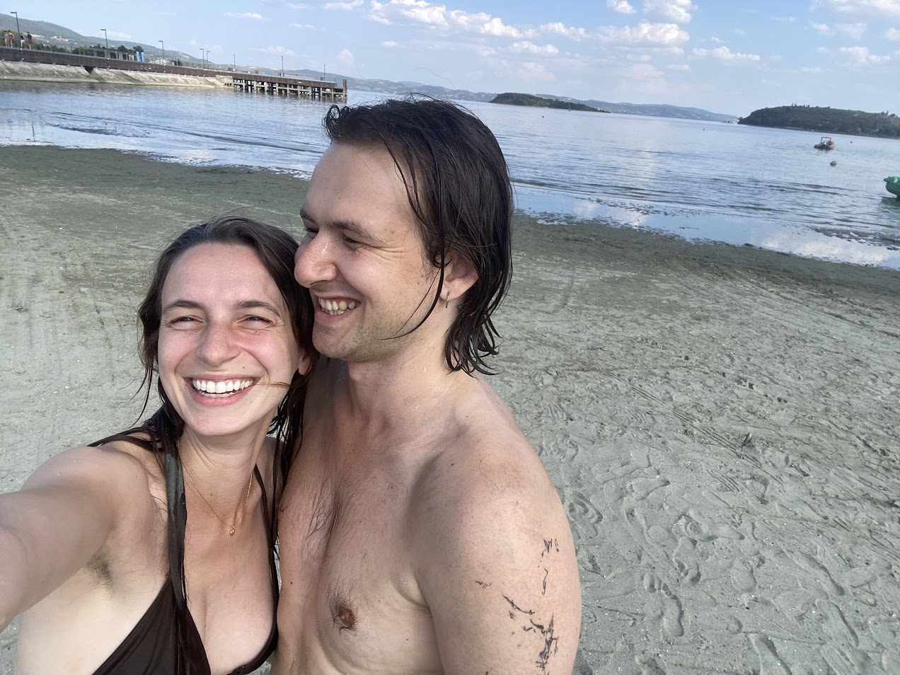
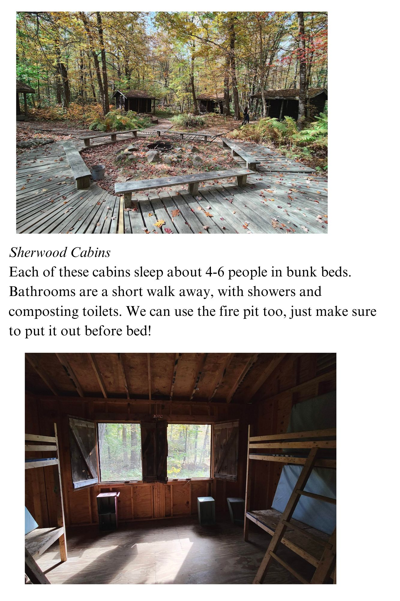
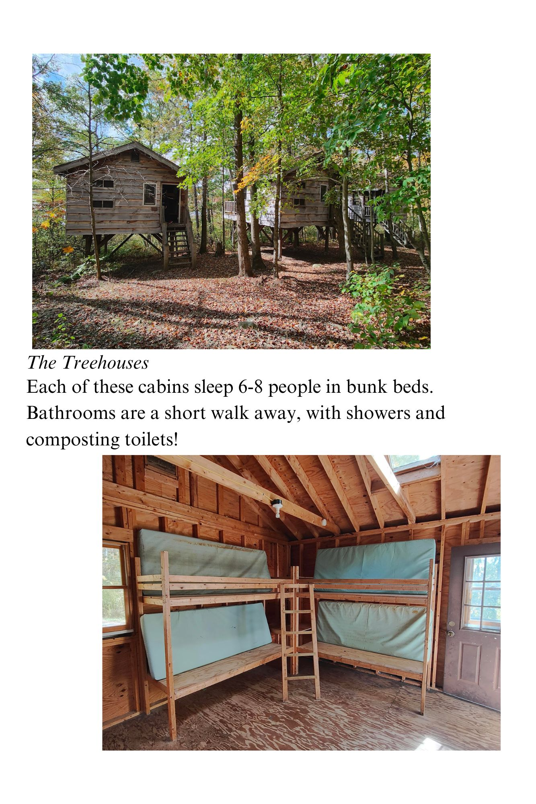
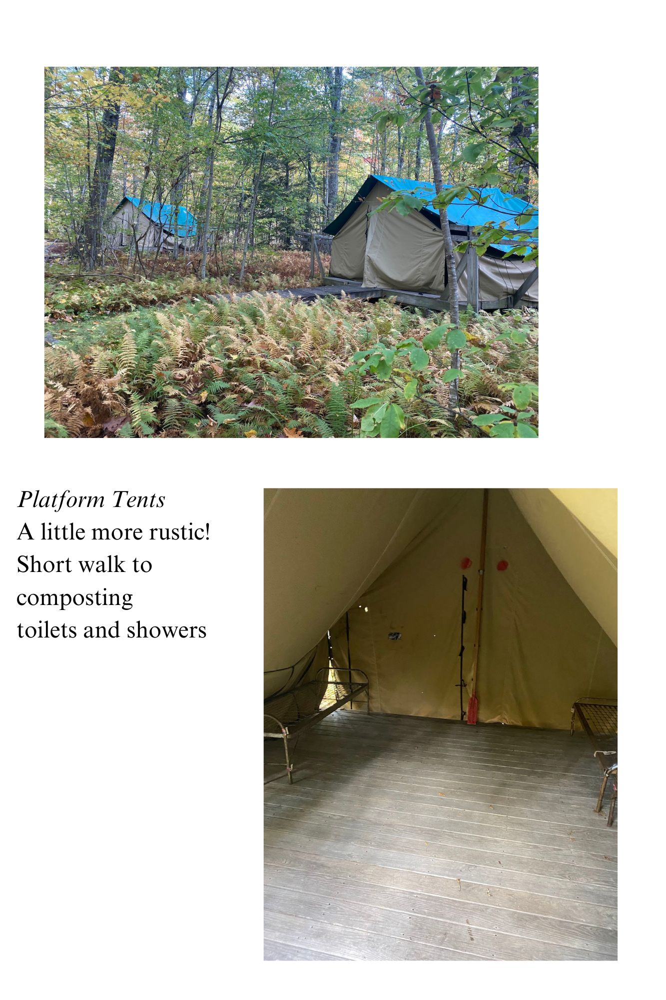
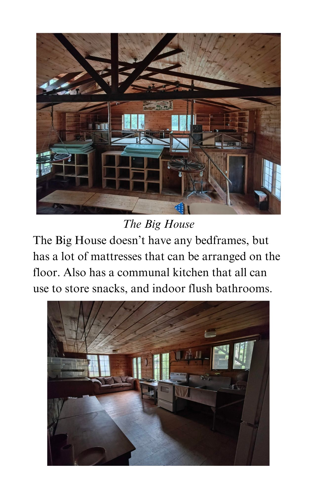
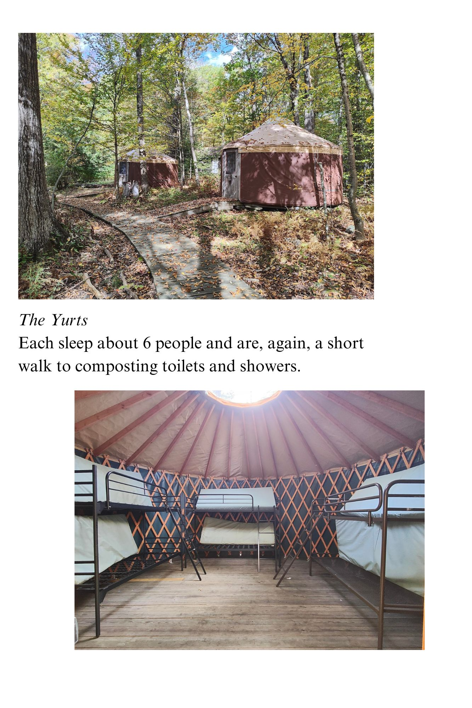
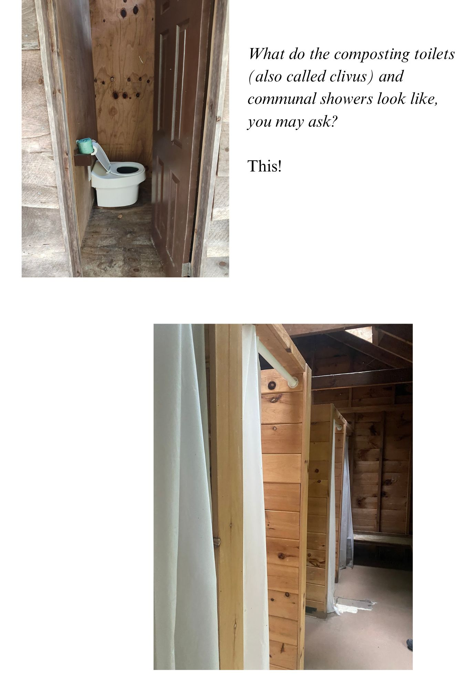
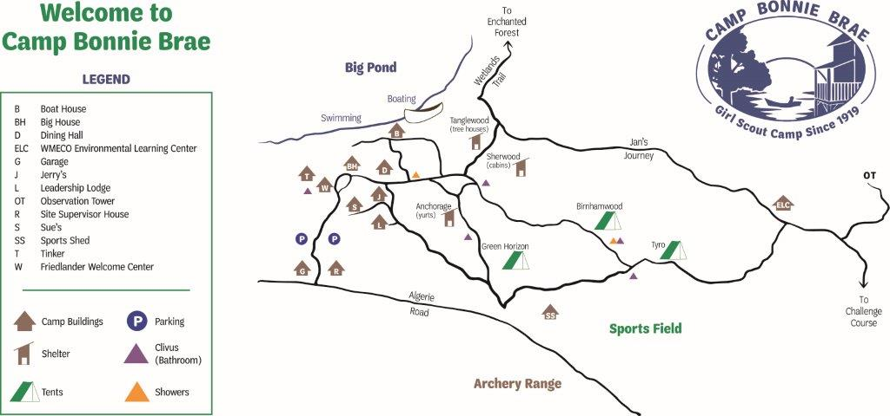

Eli & Sophia are getting married!
at Camp Bonnie Brae in
Otis, Massachusetts
Friday, August 22 to Sunday, August 24, 2025
Ceremony and Reception on Saturday, August 23, 2025
Our Story
We met on New Year's Eve at a small party on the cusp of 2019. Sophia had been living in NYC at the time, Eli in Providence, and both ended up coming to New Haven for the holiday night. Somehow, inexplicably to our friends, we hadn’t met each other before. Maybe it was the moonlight and moody December fog that evening, or the sense of serendipity in finding a new someone so cute and lovely among a group of friends we each knew well, or maybe Cupid had spiked the drinks that night… who knows! In any case, we kissed well before midnight struck, and from then on, it’s been us.
Getting here
Located in East Otis, Massachusetts, Camp Bonnie Brae is an overnight Girl Scout Camp overlooking Big Pond. It’s the oldest continuously operating Girl Scout camp, founded in 1919. Click here to see some cool archival footage of the camp!
Getting There
55 minute drive from Bradley International Airport in Hartford, CT
45 minute drive from Springfield, MA Amtrak station
2 hour 15 min drive from Providence
3 hour drive from NYC
2 hour 30 min drive from Boston
There is parking at camp, but we do recommend sharing a ride with other guests, to save on parking space, and to be kind to our Earth. We’re compiling a list of people with extra space in their cars, and those who are in need of a ride!
Click THIS LINKto see if you can share a ride to/from the airport, train station, NYC, Providence, Boston, or wherever!
Please note that Ubers/Lyfts are not super reliable out in this area of the Berkshires.
We’re making a playlist for you to listen to on your drive :) Check back here later :)
Lodging
Come rough it with us at camp for free!If you do choose to stay with us at camp, you’ll find a section in your RSVP where you can let us know any of your accessibility needs and which other guests you’d like to be bunked with. Unless you’re pitching a tent, we’ll assign you a cabin, and do our best to meet everyone’s needs.
We will assign all of our guests to suitable cabins/tents/yurts, taking into account your needs and requests!
     We totally get it if you want or need a more traditional sleeping arrangement.
We also reserved a hotel block at both Holiday Inn Express, in Great Barrington, MA and Fairfield Inn and Suites in Great Barrington, MA. Give them a call to reserve your room! These hotels are about a 30-minute drive away from the venue.
Other, other lodging:
- Home shares! The Berkshires have loads of Air B&Bs and VRBOs.
- There are a few more hotels in the surrounding towns too, here are a just few options we have encountered:
Big Pond
Camp Bonnie Brae is oriented around Big Pond, a deceptively named lake. It’s wonderful for swimming! We will hire a lifeguard for a few hours of safe swimming and kayaking.
What to Bring:
- Please bring a sleeping bag, blankets, sheets, and a pillow. Even in August, it can get chilly at night by the water! We recommend bringing more blankets than you’d think you’d need, just in case. The bunks are twin XL, if you’re bringing sheets.
- Swimsuit and towels!
- Snacks. Please note that all foodmust be stored securely in the refrigerators at camp, not loose in any tents or cabins. There are fridges in the Big House, Leadership Lodge, and Dining Hall that all can use. This is a camp in a forest, and there is apparently a particularly comfortable bear around. Feel free to bring whatever snacks or food you’d like, just remember to label if you don’t feel like sharing, so others don’t mistake it for communal food!
- Bug spray and sunscreen. It can get really mosquito-y.
- Flashlight! You’ll need this to find your cabin at night.
- Comfy shoes.
- Raincoat or umbrella, just in case.
What you carry in, you must carry out! We’ll give a checklist of how to leave your cabin in good condition for when we all head out on Sunday.
Map
Schedule
Even if you don’t stay with us overnight at camp, all are invited to join us for all meals, activities, and hanging out at camp!
Friday
3:00 PM - 5:00 PM: Arrival & Check-In
Settle into cabins or tents, relax, and explore the camp.
5:30 PM - 9:30 PM: Welcome Pizza Picnic
Pizza picnic and a campfire!
Saturday
We’ll serve some kind of low-frills breakfast & lunch.
Spend the day swimming, hiking, and hanging!
4:00- Wedding Ceremony
Location: By the lakefront
5:00-6:00: Cocktail Hour
Location: Dining hall deck
6:00-Whenever!: Reception
Dinner & dancing
Sunday
9:00-1:00: Bagel Brunch
Bagels, bagels, bagels.
1:00-2:00: Goodbyes!
Pack up, make sure your cabin is good-to-go, and give everyone a big kiss goodbye.
RSVPS
This page will open once we send out our digital invitations!
Questions?
Q: Is there parking at camp?
A: Yes! There is a decent amount, but we do recommend ridesharing with other guests. Please see this linkto see if there are other guests who you can easily carpool with, to save parking space and our planet.
Q: What should I wear to the ceremony and reception?
A: Whatever makes you happy! We encourage color. Our wedding will take place outdoors, on dirt, so beware of sinking stilettos.
Q: Can I bring a plus one?
A: We’d love to accommodate everyone, but due to capacity limits at camp, we won’t be able to include additional guests. You’ll know if you have a plus one on your digital wedding invitation!
Q: Can I bring my kids?
A: We’ve included the names of all who are invited on your invitation. Please reach out if you have any questions!
Q: Will there be vegan/gluten-free/other dietary options?
A: Please let us know in your RSVP of any allergies or dietary restrictions. As we are both vegetarian, the wedding will be as well, and we will try our best to accommodate any other restrictions, except for all-meat diets lol.
Q: What’s the weather like?
A: The weather in Otis, MA in August is typically pretty hot and muggy, but be prepared for anything! We recommend checking the forecast closer to the wedding date and packing accordingly. Even if it’s forecasted to be hot, please pack a light layer just in case.
Q: Is the camp ADA-accessible?
A: We will hire a golf cart to help people who need it to get around camp. Please note there are no officially ADA-accessible bathrooms on site, but there are bathrooms that do not require going up any steps.
Q: Who should I contact if I have any questions?
A: Sophia at 203.589.6859, Eli at 781.941.6294, or Cleo at 203.676.0877